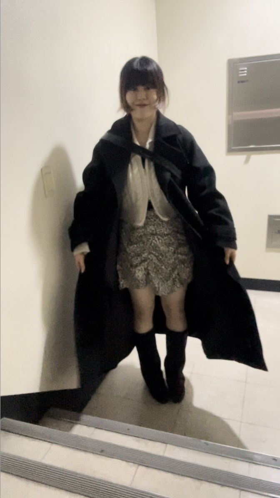

ARCHIVE
Daily Look
Daily Look
at
-7.3
-7.3

👢부츠의 계절
[at -7.3] 돼지병이 걸려 다소 조심스러운 룩은 롱코드를 벗지 않는 것으로 해결하기.. 갈색 부츠는 이번에 시원하게 질러버렸다. 사실 블랙을 사고싶었는데, 블랙 아이템도 많고ㅠ 블랙 롱부츠도 이미 있어서 과감하게 도전했다 그런데 확실히 지금 옷으로는 매치가 쉽지 않다.. 일단 아이템이 블랙과 좀 잘어울리는 제품이 많고 브라운과 어울릴만한 옷들은 무드가 맞지 않기 때문..(헉) 그래서 꾸역꾸역 입고 싶어서 고른 오늘의 룩이다. 아이 니트집업은 올 하반기 정말정말 잘 입어줬다. 그래서 이제는 보내줘야 할 때 같다.. 이렇게 보풀이 많이 생길 줄은..!
[at -7.3] 돼지병이 걸려 다소 조심스러운 룩은 롱코드를 벗지 않는 것으로 해결하기.. 갈색 부츠는 이번에 시원하게 질러버렸다. 사실 블랙을 사고싶었는데, 블랙 아이템도 많고ㅠ 블랙 롱부츠도 이미 있어서 과감하게 도전했다 그런데 확실히 지금 옷으로는 매치가 쉽지 않다.. 일단 아이템이 블랙과 좀 잘어울리는 제품이 많고 브라운과 어울릴만한 옷들은 무드가 맞지 않기 때문..(헉) 그래서 꾸역꾸역 입고 싶어서 고른 오늘의 룩이다. 아이 니트집업은 올 하반기 정말정말 잘 입어줬다. 그래서 이제는 보내줘야 할 때 같다.. 이렇게 보풀이 많이 생길 줄은..!
color